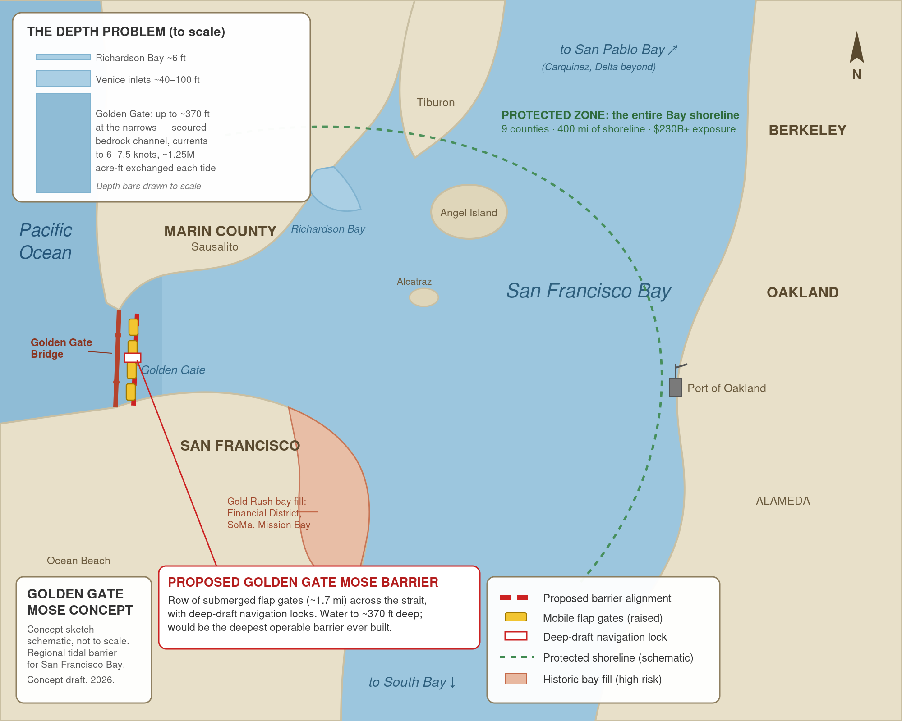
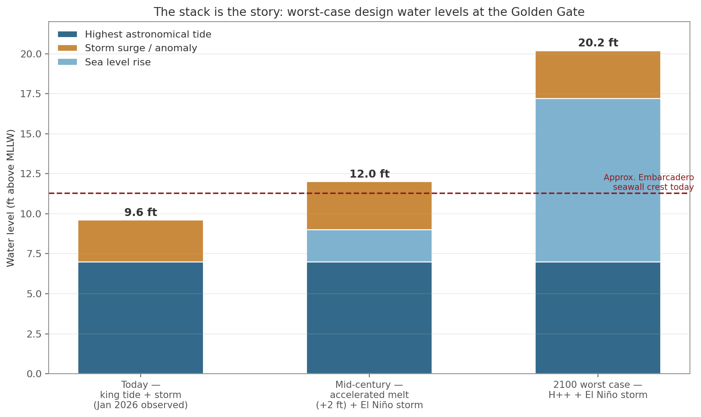
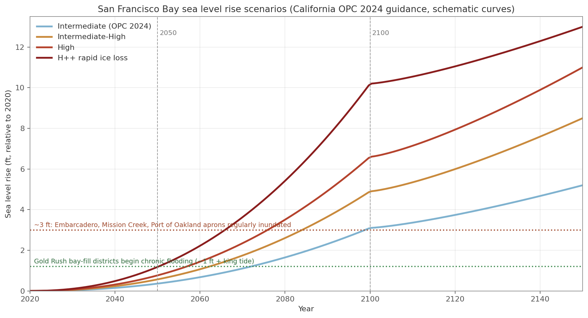
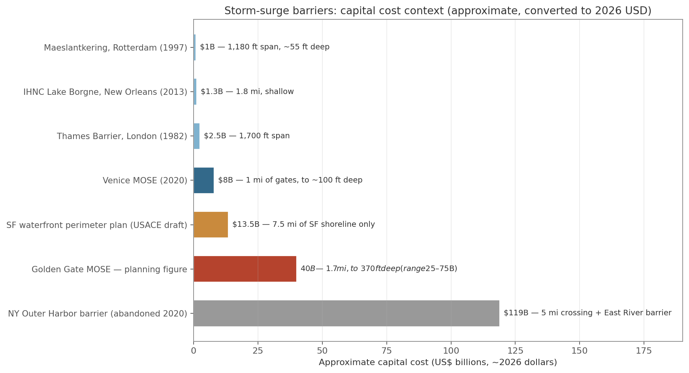
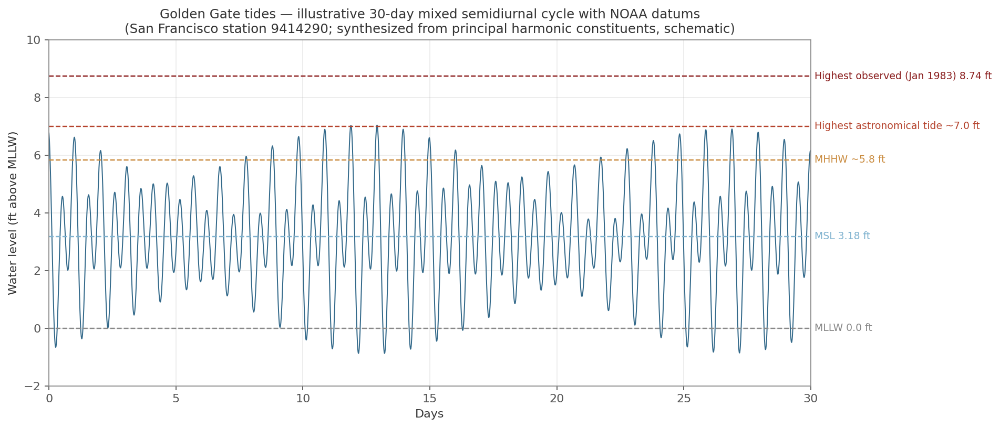

The Case
The San Francisco Bay's water level is set in one place: a mile-wide gap in the coastal hills that we named, before we understood how literally, the Golden Gate. The region's own planners have already counted the cost of leaving it undefended: $230 billion in flood damage by 2050 if the shoreline goes unprotected — and that figure stops at mid-century, before the worst case even arrives. Under California's official worst-case tide scenario, storm tides stack to roughly 20 feet above today's low water: both airports, the ports, US-101 and I-880, dozens of wastewater plants, and every downtown built on Bay fill — flooded in the same hour, in all nine counties, with commerce stopped across the entire region at once. That is not a distant abstraction. It is the largest uncounted liability on the Bay Area's books.
Venice faced the same problem and built a machine for it: MOSE — 78 steel gates lying invisible on the seabed, raised by compressed air for a few hours when a dangerous tide is forecast. Since 2020 the gates have closed roughly a hundred times and turned the world's most famous drowning city into a place that simply doesn't drown anymore.
Could the Bay Area do the same thing at the Golden Gate? Nobody knows — because nobody has ever seriously studied it with modern tools. This project makes one specific, modest ask: the federal sea-level-rise study beginning in 2026, already authorized by the Water Resources Development Act of 2024, should formally examine an operable tidal barrier at the Golden Gate. Not build one. Study one — before rising seas and 400 miles of piecemeal seawalls foreclose the question.
Maybe the study concludes it can't be done, or shouldn't. That conclusion would be worth every penny of the study that reached it.

The Numbers




Interactive Models
Explore how a buoyancy-driven barrier works — no motors, rams, or cables; just compressed air and physics.
Golden Gate MOSE in 3D
Animated 3D visualization of flood barriers rising at the Golden Gate, with day/night cycle and shipping traffic.
Open model →Gate Anatomy — Interactive Cutaway
A cutaway of a single MOSE gate: ballast compartments, hinges, air lines, and the physics of controlled buoyancy.
Open model →MOSE System Blueprint
Blueprint-style schematic of the full Venice MOSE system — shore plants, caissons, galleries, and gate arrays.
Open blueprint →Golden Gate Barrier Blueprint
Concept blueprint adapting the MOSE approach to the Golden Gate's depth, currents, and shipping channel.
Open blueprint →Documents
Feasibility Study
The full Golden Gate MOSE feasibility study: history, engineering, costs, ecology, and the path through the 2026 federal study.
Download PDF →MOSE Technical Blueprints
Printable blueprint set describing the MOSE gate and system specifications.
Download PDF →How the MOSE Works
A plain-language scientific description of the buoyancy-stabilized flap gate at the heart of the system.
Read →MOSE in Action
Documentaries, news footage, and satellite imagery of Venice's gates holding back the Adriatic.
Watch →About This Project
Jim Palozola of Mill Valley is a serial entrepreneur and longtime Marin County resident. Over forty years he co-founded RockNet, the internet's first online music company, and Tailwinds, one of America's earliest e-commerce retailers, now in its fourth decade. He is the author of a companion proposal for an operable tidal barrier at Richardson Bay.
"I've spent forty years betting early on obvious things — solar in the 1970s, online music in 1984, internet retail in 1996. The water is the most obvious thing I've ever seen coming. Venice waited until the 1966 flood nearly destroyed it, then took fifty years to build its machine. Our 1966 hasn't happened yet. That's the opportunity, and it has a deadline."